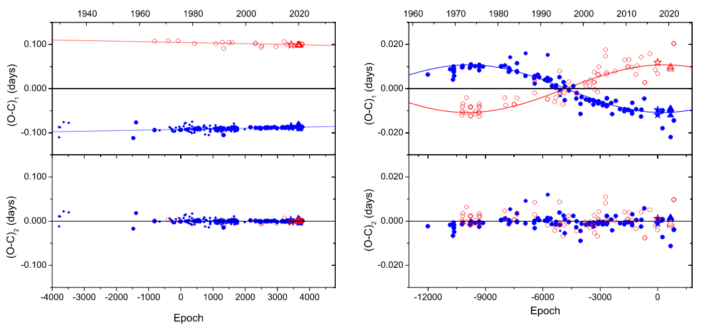
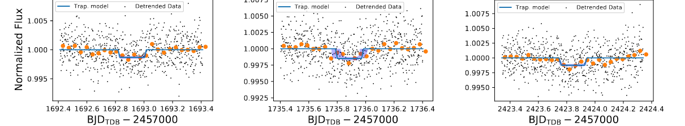
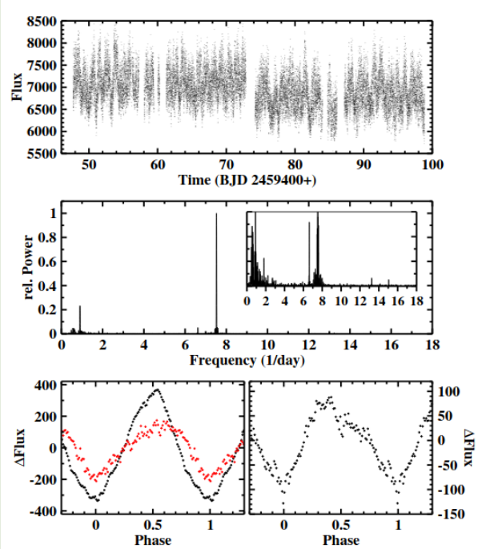

Welcome TESS followers to our latest news bulletin! This week, we are looking at three recent papers from the archive. Enjoy!
Eccentric orbits and apsidal motion in the eclipsing binaries EK Cep and HS Her (Latkovic et al., 2022) :
Young detached eclipsing binary stars are important systems in which to test theories regarding stellar structure, formation, and evolution. Previous studies of two such systems -- EK Cep and HS Her -- mostly relied on pre-CCD observations and often suffered from high noise and sparse phase coverage. This paper presents results from a comprehensive, up-to-date analysis of these two systems. Latkovic et al. (2022) use PHOEBE 1.0 to model new photometric observations from TESS and the University of Athens Observatory, and spectroscopic observations from NAO Rozhen. The authors use all available data to perform a detailed eclipse timing analysis. The orbital and stellar parameters calculated from PHOEBE are in excellent agreement with the eclipse-time measurements, showing that both binaries are slightly eccentric and exhibit clear apsidal motion. Comparisons with evolutionary tracks indicate that the age of EK Cep is between 16 and 20 Myrs, and HS Her is between 25 and 32 Myrs. Latkovic et al. (2022) argue that their results ruled out a tertiary companion to HS Her, and note that continued observations will place stronger constraints on the variations in the orbital parameters of EK Cep.
TESS Observations of Kepler systems with Transit Timing Variations (Jontof-Hutter et al., 2022) :
Transit timing variations provide a powerful tool for characterizing exoplanet masses. The SNR of the variations increase with the orbital period, and a longer observational baseline adds value to the measurements by further improving the constraints of the models used. This paper presents the analysis of transit timing variations of multiplanet systems observed by Kepler and TESS. Jontof-Hutter et al. (2022) use data from TESS Sectors 14, 15, 26, 40, and 41 and pixel-level decorrelation to detect 48 transits of 13 Kepler exoplanets. The authors argue that a TESS transit of Kepler-89e is inconsistent with the expectations based on the known configuration of the system, they found strong evidence of an additional, non-transiting perturber in the Kepler-396 system, and they note that the studied systems are among the faintest Kepler targets with reasonable photometric precision achieved by TESS. In addition, Jontof-Hutter et al. (2022) refine the ephemerides and further constrain the masses of Kepler-9, Kepler-18, Kepler-20, Kepler-25, Kepler-30, Kepler-37, Kepler-51, Kepler-89, Kepler-102, Kepler-130, Kepler-289, and Kepler-1662.
TESS light curves of cataclysmic variables I -- Unknown periods in long-known stars (Bruch, 2022) :
Cataclysmic variables are interacting binary stars experiencing mass transfer from the secondary to the primary star. These systems exhibit rich, prominent variability, such as orbital and rotational variations, and positive or negative superhumps. Due to its underlying complexity and the fact that it spans a range of different timescales, studying this variability requires long-term, high-cadence, uninterrupted photometric monitoring. This paper presents the search of periodic variations in a sample of 15 nova-like and old novae cataclysmic variables observed by TESS. Bruch (2022) uses the short-cadence TESS lightcurves and applies Fourier techniques to calculate periodograms of the target stars. The author finds an abundance of new superhumps, yet no preference for their occurrence or lack thereof based on the type of the cataclysmic variable, and identifies unusual features in known superhumps. Bruch (2022) also notes that negative superhumps are more common than positive, detects the spin period of TV Col in optical light, highlights the time-dependent frequency of CP Pup, and argues that the occurrence of superhumps is a common feature of cataclysmic variables rather than an exception.

Fig. 1: Taken from Latkovic et. al. (2022). Left panel: Observed minus Calculate (O-C) diagram for EK Cep. Filled/open symbols represent primary/secondary eclipses, respectively. Right panel: Same as left, but for HS Her. The triangle symbols represent observations from TESS.

Fig. 2: Taken from Jontof-Hutter al. (2022). Three transits of Kepler-396 b as observed by TESS. The black symbol represent the normalized detrended TESS data. The blue lines represent the best-fit trapezoid model, where the shaded region represents the 68% credible region.

Fig. 3: Taken from Bruch (2022). Upper panel: TESS lightcurve of TT Ari. Middle panel: Corresponding power spectrum. Lower left panel: Phase-folded lightcurve on the period of the negative superhump (black) and on the beat period between the positive and negative superhumps (red), binned to phase of 0.01. Lower right panel: same as lower left but for the positive superhump.